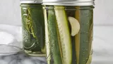

Dill Pickles Recipe

Dill Pickles
Ingredients
- 3.5 cups water
- 1.25 cups white vinegar
- 1 tablespoon white sugar
- 1 tablespoon salt
- 4 cups cucumber spears
- 2 cloves garlic, whole
- 2 heads fresh dill
Directions
- Gather all ingredients
- Stir water, vinegar, sugar, and sea salt together in a saucepan over high heat; bring to a boil. Remove from the heat and cool completely.
- Combine cucumber spears, garlic cloves, and fresh dill in a large glass or plastic lidded container.
- Pour cooled vinegar mixture over cucumbers, garlic, and dill.
- Seal container with lid and refrigerate for at least 3 days.
- Serve and enjoy!